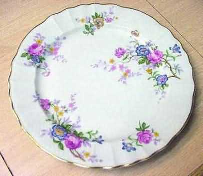
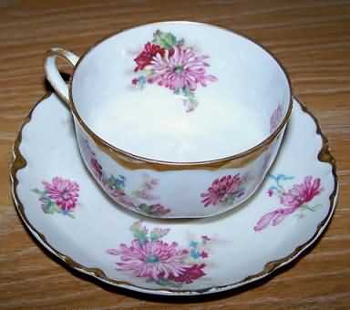
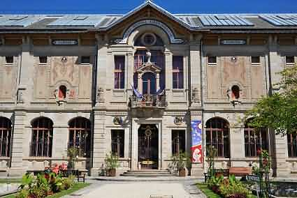

全世界公认最精致的利摩日(Limoges)瓷器 ，发迹自1771 年所挖出的高岭土,这种质纯色白的黏土经过1400°C 的高温炼烧 ，形成质地硬朗 、具半透明状的精致 细腻外观 ，号称全世界最上等的瓷器 ，有(法国白金)美誉. Limoges ，是法国最 著名的瓷器生产老镇 ，打从18 世纪中期起 ，成为法国国王指定的瓷器精品供应地区。
Limoges 大英百科全书中 译为 "利摩日 "，这不是品牌的名字而是个地名，位于法国的中西部，在制瓷业的地位可以说跟中国的景德镇齐名，是欧洲的瓷器重镇，有 "名瓷之都"的执牛耳地位。
清朝康熙年间，一位法国传教士来到中国，这位传教士在传教过程中曾经在景德镇住了七年时间，因此当他回到欧洲祖国法国后，景德镇制作瓷器的技术很自然地被他带入西方。利摩日生产的美丽瓷钟甚至成为康熙雍正的两代收藏，至今仍然被保存在中国的故宫。
不但如此，后来在1768年时，利摩日附近发现了丰富的高岭土，更奠定了利摩日作为名瓷之都的地位。 这种高岭土是烧制瓷器的重要原料，因为它经过高温加热后会变成白色。有了量多质佳的原料，当地总督便下令建起第一座瓷器厂，从此开展了利摩日的风光历史，利摩日这个名字更成为精致白瓷的代名词。据说每年都有世界各地的王公贵族到利摩日来订制瓷器，甚至整个欧洲有 80%的皇家瓷器，都骄傲地印上 "利摩日出品 " 的字号，宛如冠冕。
1845年法国瓷商Adrien Dubouche捐出他毕生收藏的各国瓷器，在利摩日成立陶瓷博物馆（Musée national Adrien Dubouché），展品多达上万件，从2、3千年前希腊罗马时期的古 陶，到当代设计师的经典名瓷，都在博物馆内展出。
Adrien Dubouché的收藏品十分丰富，包括：英国伊丽莎白二世登基时的皇家瓷盘、美国前总统海斯（Hayes）与林肯等人的总统瓷盘、知名艺术家Raymond Loewy为法航头等舱 设计的迷你尺寸餐瓷等。
利摩日的特产「白瓷烛杯」，也是博物馆的展示品之一，烛光透过薄透白皙的瓷杯，映出杯面上凹凸的美丽图案，典雅细腻。到利摩日，别忘买个回家。